Overview
Aligning a diffusion transformer with a pretrained vision encoder is one of the most effective ways to make it train faster.
REPA
We looked at where the semantics actually end up. The output of $g_\phi$ is better aligned with the vision encoder than any layer of the diffusion transformer, yet it is exactly the part that gets thrown away. The later layers, which are supervised by the velocity loss alone, only ever see the less aligned backbone features.
REpresentation CONditioning (RECON) is a simple fix: keep the head and use it. During training, we pool the vision encoder tokens into a semantic token and feed it to the later layers alongside the patch tokens. At inference, when there is no clean image to encode, the retained head $g_\phi$ stands in for the vision encoder. RECON adds no parameters and converges 63× faster than SiT and 25× faster than REPA.
Why Keep the Projection Head?
We measure how closely a set of features matches the vision encoder with CKNNA
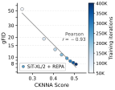
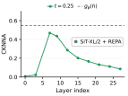
Three observations motivate RECON:
- Alignment tracks generation. Across REPA checkpoints, gFID falls as CKNNA rises (Pearson $r=-0.93$). Alignment and generation quality improve together.
- The projection head is the best-aligned module. The output of $g_\phi$ is closer to the vision encoder than every layer of the backbone. That is not surprising: the head sits right next to the encoder and is trained directly on the alignment loss.
- Yet it is discarded. After training, REPA-style methods drop $g_\phi$, so the later layers only see the backbone features $h$, which are less aligned with the vision encoder than $g_\phi(h)$.
Takeaway. Discarding $g_\phi$ throws away the most semantic module of an aligned diffusion transformer. RECON keeps it and gives the later layers direct access to the best-aligned features, at no extra cost.
Representation Conditioning
Background. Following SiT
As in REPA, we view the transformer as an encoder $\mathcal{E}_\theta$, made of the first $\ell$ blocks and producing $h=h^{(\ell)}$, followed by a decoder $\mathcal{D}_\theta$ made of the remaining blocks, which we call the later layers. REPA adds an alignment loss, weighted by $\lambda$, between the projected features and the frozen encoder features $y_0=f_{\text{ext}}(x_0)$:
where $n$ indexes patches and $\mathrm{sim}$ is cosine similarity. The alignment depth is $\ell=8$ for SiT-XL/2.
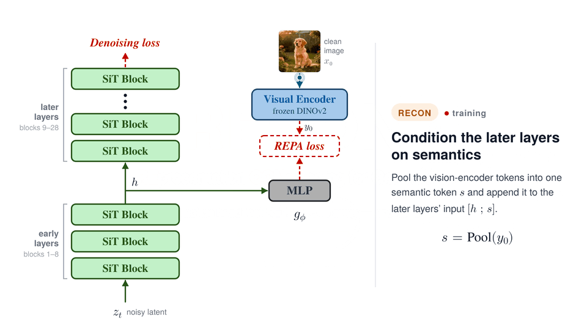
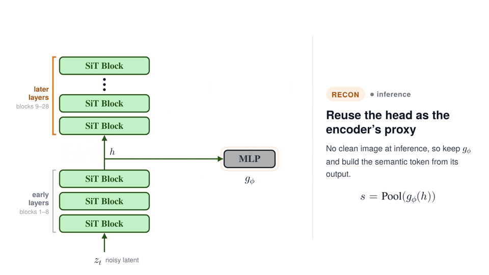
Semantic tokens
Let $y_0=f_{\text{ext}}(x_0)\in\mathbb{R}^{N\times D}$ be the vision encoder features of the clean image. We pool them into $k\ll N$ semantic tokens and match them to the hidden width $C$ of the transformer:
$\mathrm{Pool}$ is parameter-free average pooling, and we use a single token ($k=1$) by default. The dimension-matching map $m$ is the identity when $D=C$, zero-padding when $D<C$, and a linear layer otherwise. With DINOv2-B ($D=768$) and SiT-B, L or XL, $m$ is the identity or zero-padding, so RECON adds no parameters; only Small models, whose width is below the encoder's, need a linear map, with fewer than 1M parameters.
In-context conditioning
The semantic tokens are concatenated with the patch tokens and processed by every later block:
The patch tokens can attend to the semantic token at any depth, and the semantic tokens are dropped before the final block.
Teacher forcing, with time-dependent injection
During training, we build the semantic token from the ground-truth encoder features $y_0$, much like teacher forcing in language models. We could build it from $g_\phi(h)$ instead, but $g_\phi$ is itself being trained: its output starts far from $y_0$ and keeps moving, so the later layers would be asked to rely on a signal that is neither accurate nor stable. $y_0$, by contrast, is stable from the first step.
Teacher forcing vs. other strategies. Source of the training-time token; gFID and IS after 100K iterations.
| Tokens built from | gFID↓ | IS↑ |
|---|---|---|
| $f_{\text{ext}}(x_0)$ | 9.2 | 118.8 |
| $g_\phi(h)$, online | 17.1 | 76.3 |
| $g_\phi(h)$, EMA | 16.8 | 77.5 |
Teacher forcing at every timestep would open a train–inference gap. At inference the token comes from $g_\phi(h)$, which approximates $y_0$ well at low noise levels and poorly at high ones, so training on $y_0$ at high noise would teach $\mathcal{D}_\theta$ to rely on information it will not get at generation time. We therefore inject the token only below a noise threshold during training, and let $\mathcal{D}_\theta$ run on $h$ alone otherwise:
Inference: the projection head as a proxy encoder
There is no clean image at inference, so we reuse the projection head:
$g_\phi$ was trained to predict the vision encoder features from $h$, which makes it a natural stand-in. Unlike training, we inject the token at every sampling step, which works clearly better: the decoder appears to apply what it learned at low noise levels across the whole trajectory (more in the discussion).
Injection at inference. Semantic token only for $t<t_{\max}$, as in training, or at every sampling step.
| Injected at | gFID↓ | IS↑ |
|---|---|---|
| $t<t_{\max}$ only | 6.3 | 149.9 |
| All timesteps | 3.2 | 202.2 |
Put together, RECON changes only a few lines of a REPA training and sampling step:
# one training step (REPA + RECON); lines marked ◀ are what RECON adds z0, z1, t = vae.encode(x0), randn_like(z0), rand() zt = (1 - t) * z0 + t * z1 y0 = vision_encoder(x0) # frozen DINOv2-B, N x D h = early_blocks(zt, t, c) # first ℓ = 8 blocks loss_align = -cos_sim(g_phi(h), y0).mean() # REPA loss if t < t_max: ◀ teacher forcing, low noise only s = zero_pad(avg_pool(y0, k=1), C) ◀ one semantic token h = concat([h, s]) ◀ in-context conditioning v = later_blocks(h, t, c) # token dropped before the last block loss = mse(v, z1 - z0) + λ * loss_align # one sampling step: g_phi is kept and stands in for the vision encoder h = early_blocks(zt, t, c) s = zero_pad(avg_pool(g_phi(h), k=1), C) ◀ at every step v = later_blocks(concat([h, s]), t, c) ◀
Pseudo-code for illustration: $c$ is the class label, and the $t<t_{\max}$ test is applied per sample.
Faster Convergence, Better Samples
Class-conditional generation on ImageNet 256×256
Without guidance, RECON reaches gFID 3.25 at 400K iterations, ahead of REG (3.40) and REPA-E (4.07) at the same budget and far ahead of REPA (7.90).
Training longer brings it to 2.54 at 1M and 2.21 at 2.4M iterations.
With autoguidance
gFID without guidance on ImageNet 256×256. SD-VAE latents unless noted; †: VA-VAE latents.
| Method | Iter. | gFID↓ |
|---|---|---|
| No representation alignment | ||
| DiT-XL/2 | 7M | 9.60 |
| SiT-XL/2 | 7M | 8.30 |
| MDT | 6.5M | 6.23 |
| MaskDiT | 8M | 5.69 |
| Alignment without an external encoder | ||
| SRA | 4M | 7.27 |
| LayerSync | 4M | 6.32 |
| Self-Flow | 4M | 5.70 |
| Alignment with an external encoder | ||
| REPA | 400K | 7.90 |
| REPA | 4M | 5.90 |
| REG | 400K | 3.40 |
| REG | 1M | 2.70 |
| LightningDiT† | 400K | 4.29 |
| REPA-E | 400K | 4.07 |
| RECON | 100K | 9.25 |
| RECON | 200K | 4.64 |
| RECON | 400K | 3.25 |
| RECON | 1M | 2.54 |
| RECON | 2.4M | 2.21 |
System-level comparison on ImageNet 256×256 with guidance. RECON: Autoguidance
| Model | Epochs | FID↓ | IS↑ | Pre.↑ | Rec.↑ |
|---|---|---|---|---|---|
| Pixel diffusion | |||||
| ADM-G + ADM-U | 400 | 3.94 | 186.7 | 0.82 | 0.52 |
| VDM++ | 560 | 2.40 | 225.3 | – | – |
| Simple diffusion | 800 | 2.77 | 211.8 | – | – |
| CDM | 2160 | 4.88 | 158.7 | – | – |
| Latent diffusion, U-Net | |||||
| LDM-4 | 200 | 3.60 | 247.7 | 0.87 | 0.48 |
| Latent diffusion, Transformer + U-Net hybrid | |||||
| U-ViT-H/2 | 240 | 2.29 | 263.9 | 0.82 | 0.57 |
| DiffiT* | – | 1.73 | 276.5 | 0.80 | 0.62 |
| MDTv2-XL/2* | 1080 | 1.58 | 314.7 | 0.79 | 0.65 |
| Latent diffusion, Transformer | |||||
| MaskDiT | 1600 | 2.28 | 276.6 | 0.80 | 0.61 |
| SD-DiT | 480 | 3.23 | – | – | – |
| DiT-XL/2 | 1400 | 2.27 | 278.2 | 0.83 | 0.57 |
| SiT-XL/2 | 1400 | 2.06 | 270.3 | 0.82 | 0.59 |
| + REPA | 800 | 1.80 | 284.0 | 0.81 | 0.61 |
| + REPA* | 800 | 1.42 | 305.7 | 0.80 | 0.65 |
| + REG | 480 | 1.40 | 296.9 | 0.77 | 0.66 |
| + RECON | 80 | 2.26 | 241.22 | 0.82 | 0.57 |
| + RECON | 480 | 1.73 | 273.67 | 0.81 | 0.61 |
Pick a class. Both models use the same seed, noise and class label at every checkpoint.
Text-to-image generation
Nothing in RECON is specific to class labels.
We train MMDiT
MS-COCO. MMDiT, ODE sampler, 50 NFE, 150K iterations; $w$ is the guidance scale.
| $w=1$ | $w=2$ | |||
|---|---|---|---|---|
| Method | FID↓ | CLIP↑ | FID↓ | CLIP↑ |
| + REPA | 9.85 | 0.2273 | 4.73 | 0.2443 |
| + RECON | 8.26 | 0.2313 | 4.55 | 0.2462 |
BLIP3-o. NanoGen, ODE sampler, 50 NFE, 100K iterations.
| $w=1$ | $w=8$ | |||
|---|---|---|---|---|
| Method | FID↓ | IS↑ | FID↓ | IS↑ |
| + REPA | 5.41 | 22.40 | 5.30 | 27.61 |
| + RECON | 3.90 | 24.31 | 5.04 | 27.91 |
“A phoenix of fire in anime”
“A Birman cat with blue eyes”
“Galaxy”
“The path to Heaven”
“A living area with a television and a table”
REPA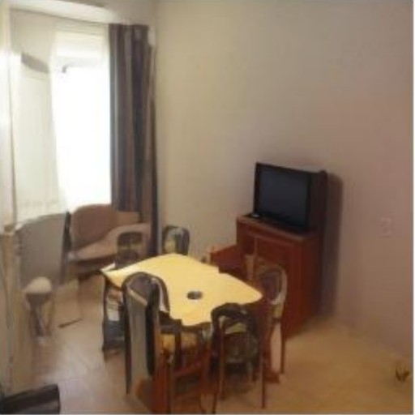
RECON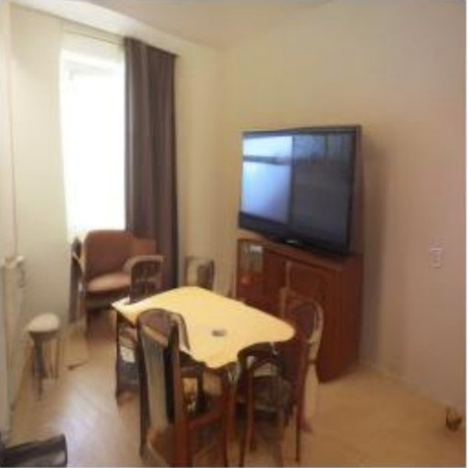
“A green train is coming down the tracks”
“A zebra standing at the edge of a pond”
“A close up of a plate of broccoli and sauce”
“Isolated beach paradise with turquoise waters and lush greenery”
“Modern pink geometric wall design with sleek lamp”
REPA RECONImplementation details and hyperparameters
| SiT-B/2 | SiT-L/2 | SiT-XL/2 | |
|---|---|---|---|
| Architecture | |||
| Input | 32×32×4 SD-VAE latent | ||
| Layers / hidden dim. / heads | 12 / 768 / 12 | 24 / 1024 / 16 | 28 / 1152 / 16 |
| Alignment (REPA) | |||
| $\lambda$ / alignment depth | 1.5 / 4 | 1.5 / 8 | 1.5 / 8 |
| Similarity / vision encoder | cosine / DINOv2-B | ||
| RECON | |||
| Semantic tokens $k$ / $t_{\max}$ (training) | 1 / 0.5 | ||
| Dimension matching | identity | zero-pad | zero-pad |
| Optimization | |||
| Iterations | 100K | 100K | 400K–2.4M |
| Batch size / optimizer / learning rate | 256 / AdamW / $10^{-4}$, $(\beta_1,\beta_2)=(0.9,0.999)$ | ||
| Sampling | |||
| Objective / sampler / steps | $v$-prediction / Euler–Maruyama SDE / 250 | ||
| Guidance‡ | Autoguidance | ||
| Weak model | SiT-XL/2 + RECON, 100K iter. | ||
| Guidance scale $w$ | 1.4 | ||
| Guidance interval | $(0, 0.85)$ | ||
‡: only for the guided SiT-XL/2 results. $g_\phi$ is a three-layer MLP with SiLU activations, as in REPA. All models are trained on 4 NVIDIA H100 GPUs: a 400K-iteration SiT-XL/2 run takes about 27 hours (≈110 GPU-hours) and the longest 2.4M-iteration run about 6.8 days (≈650 GPU-hours). RECON adds a single token to the 256 patch tokens of the later layers, so its training cost is essentially that of REPA.
| MS-COCO | BLIP3-o | |
|---|---|---|
| Architecture | ||
| Input | 32×32×4 SD-VAE latent | |
| Backbone | MMDiT | NanoGen† |
| Layers / hidden dim. / heads | 24 / 768 / 24 | 28 + 2 / 1152, 2048 / 16 |
| Text conditioning | ||
| Text encoder / max. text tokens | CLIP ViT-L/14 / 77 | Qwen3-0.6B / 256 |
| Timestep tokens | 0 (adaLN) | 4 |
| CFG dropout | 0.1 | |
| Alignment (REPA) | ||
| $\lambda$ / alignment depth | 1.5 / 8 | |
| Similarity / vision encoder | cosine / DINOv2-B | |
| RECON | ||
| Semantic tokens $k$ / $t_{\max}$ (training) | 1 / 0.5 | |
| Dimension matching | identity | zero-pad |
| Optimization | ||
| Iterations | 150K | 100K |
| Batch size / optimizer | 256 / AdamW | 1024 / AdamW |
| Learning rate | $10^{-4}$, $(\beta_1,\beta_2)=(0.9,0.999)$ | $2\times10^{-4}$, $(\beta_1,\beta_2)=(0.9,0.95)$ |
| EMA decay | 0.9999 | 0.9995 |
| Sampling | ||
| Time sampling (training) | uniform | logit-normal |
| Sampler / steps | Heun ODE / 50 | Euler ODE / 50 |
| Guidance scale $w$ | 1, 2 | 1, 8 |
| Data | ||
| Training images | ∼83K | ∼36M |
†: NanoGen is a text-to-image variant of DDT, with an encoder and a decoder. Its layers and hidden dims are given for the encoder and the decoder. $g_\phi$ is a three-layer MLP for MMDiT and a linear layer for NanoGen.
Richer Semantics Inside the Model
More semantics in every layer
We measure the semantics of each layer of SiT-XL/2 in two ways: CKNNA against DINOv2-B, and the top-1 accuracy of a linear probe trained on the layer's frozen features on ImageNet-1K.
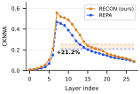
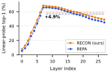
Structure settles earlier during sampling
Richer features also change how a sample develops. We follow the semantic trajectory of a sample: at every step, the cosine similarity in DINOv2 space between the running estimate $\hat x_0(t)$ and the final image, which tells how much of the subject and layout is already decided at time $t$. RECON's estimate reaches the final layout earlier, for a single sample (both models start from the same noise) and across 10K samples.
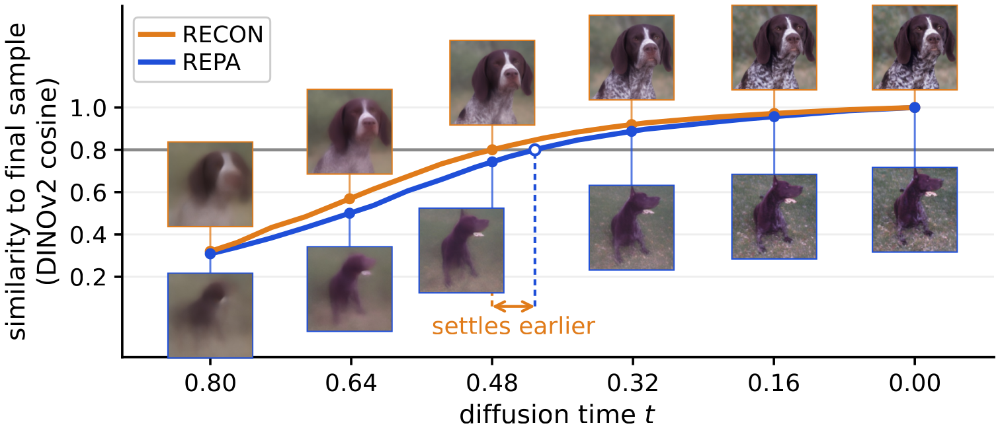
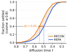
Fewer sampling steps
Because structure emerges earlier, RECON needs fewer sampling steps. Cutting the number of function evaluations from 250 to 100 and 50, with everything else fixed, degrades REPA from 7.9 to 8.4 and 10.82 gFID, while RECON stays at 3.2 and goes to only 3.3. That is 2.5× to 5× fewer network evaluations at inference at almost no cost in quality.
Sampling steps. gFID-50K; SiT-XL/2, 400K iterations, no CFG.
| NFE | 50 | 100 | 250 |
|---|---|---|---|
| REPA | 10.82 | 8.4 | 7.9 |
| RECON | 3.3 | 3.2 | 3.2 |
Recovering heavily corrupted images
A related test: can the model recover an image from heavy corruption? We move a clean image along the interpolant to $t=0.8$ (80% noise, 20% image) and let REPA and RECON (SiT-XL/2) denoise it from the same noisy latent, with the same class label, sampling noise and sampler (Euler–Maruyama, 200 steps, no CFG), so any difference comes from the model. RECON commits to the subject within the first few steps and recovers the identity and layout of the input better, while REPA's estimates stay blurry for much longer.
Generalization and Scalability
Unless stated otherwise, every run here uses SD-VAE latents, DINOv2-B as the target encoder and alignment depth 8 (4 for SiT-B/2), is evaluated without guidance, and is compared with vanilla REPA trained under the same protocol.
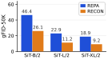
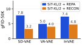
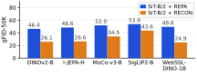
- Model scale. RECON improves REPA substantially at every scale. SiT-L/2 with RECON (11.24) is even better than the larger SiT-XL/2 with REPA (18.88) at the same budget.
- Tokenizers. Gains hold on SD-VAE
(7.84 → 3.25), In-VAE (7.41 → 4.78) and VA-VAE (4.95 → 4.02). The gain on VA-VAE is smaller, likely because that tokenizer is itself trained with an alignment loss, so part of the semantics RECON injects is already in its latent space. For VA-VAE and In-VAE ($16\times16\times32$ latents) we use patch size 1, so all three tokenizers give 256 tokens and the same compute per step. - Target encoders. RECON improves REPA with all five encoders: I-JEPA-H
, DINOv2-B, MoCo-v3-B , SigLIP2-B and WebSSL-DINO-1B . Since it pools patch features, it does not need a class token, unlike REG, which works best when aligning with the encoder's class token.
Full metrics: FID, IS, precision and recall
Model scale. 20 epochs, SD-VAE, no CFG.
| Model | Method | FID↓ | IS↑ | Pre.↑ | Rec.↑ |
|---|---|---|---|---|---|
| SiT-B/2 | REPA | 46.35 | 30.53 | 0.477 | 0.608 |
| RECON | 26.08 | 54.63 | 0.620 | 0.577 | |
| SiT-L/2 | REPA | 22.95 | 59.17 | 0.618 | 0.610 |
| RECON | 11.24 | 104.44 | 0.742 | 0.550 | |
| SiT-XL/2 | REPA | 18.88 | 69.34 | 0.647 | 0.608 |
| RECON | 9.25 | 118.80 | 0.760 | 0.543 |
Tokenizer. SiT-XL, 80 epochs, no CFG.
| Latent | Method | FID↓ | IS↑ | Pre.↑ | Rec.↑ |
|---|---|---|---|---|---|
| SD-VAE | REPA | 7.84 | 125.43 | 0.700 | 0.654 |
| RECON | 3.25 | 204.18 | 0.817 | 0.565 | |
| VA-VAE | REPA | 4.95 | 146.43 | 0.761 | 0.611 |
| RECON | 4.02 | 163.04 | 0.774 | 0.604 | |
| InVAE | REPA | 7.41 | 125.25 | 0.712 | 0.655 |
| RECON | 4.78 | 151.10 | 0.755 | 0.627 |
Target encoder. SiT-B/2, 20 epochs, SD-VAE, no CFG.
| Encoder | Method | FID↓ | IS↑ | Pre.↑ | Rec.↑ |
|---|---|---|---|---|---|
| DINOv2-B | REPA | 46.35 | 30.53 | 0.477 | 0.608 |
| RECON | 26.08 | 54.63 | 0.620 | 0.577 | |
| I-JEPA-H | REPA | 48.56 | 28.41 | 0.465 | 0.596 |
| RECON | 26.56 | 54.36 | 0.592 | 0.574 | |
| MoCo-v3-B | REPA | 51.98 | 26.60 | 0.449 | 0.597 |
| RECON | 34.45 | 41.88 | 0.584 | 0.547 | |
| SigLIP2-B | REPA | 53.85 | 25.12 | 0.440 | 0.587 |
| RECON | 43.65 | 31.29 | 0.508 | 0.550 | |
| WebSSL-DINO-1B | REPA | 49.61 | 28.52 | 0.459 | 0.596 |
| RECON | 24.92 | 55.74 | 0.656 | 0.527 |
Design Choices
We vary the components RECON introduces one at a time, holding the others at their defaults: the alignment depth, the number of semantic tokens $k$, the injection threshold $t_{\max}$ and the dimension-matching mechanism.
Component-wise analysis on ImageNet 256×256. SiT-XL/2 with DINOv2-B as the target, 400K iterations, no classifier-free guidance. Each block varies a single component (shaded).
| Depth | $k$ | $t_{\max}$ | Dim. matching | FID↓ | IS↑ | Pre.↑ | Rec.↑ |
|---|---|---|---|---|---|---|---|
| Vanilla SiT-XL/2 | 17.20 | 76.52 | 0.65 | 0.63 | |||
| SiT-XL/2 + REPA | 7.83 | 125.43 | 0.70 | 0.65 | |||
| 6 | 1 | 0.5 | zero-pad | 3.26 | 205.86 | 0.81 | 0.56 |
| 8 | 1 | 0.5 | zero-pad | 3.25 | 204.18 | 0.81 | 0.56 |
| 10 | 1 | 0.5 | zero-pad | 3.38 | 202.34 | 0.81 | 0.55 |
| 8 | 1 | 0.5 | zero-pad | 3.25 | 204.18 | 0.81 | 0.56 |
| 8 | 4 | 0.5 | zero-pad | 4.70 | 214.01 | 0.84 | 0.50 |
| 8 | 1 | 0.3 | zero-pad | 5.33 | 146.74 | 0.74 | 0.63 |
| 8 | 1 | 0.5 | zero-pad | 3.25 | 204.18 | 0.81 | 0.56 |
| 8 | 1 | 1.0 | zero-pad | 4.70 | 236.82 | 0.84 | 0.44 |
| 8 | 1 | 0.5 | zero-pad | 3.25 | 204.18 | 0.81 | 0.55 |
| 8 | 1 | 0.5 | linear | 3.68 | 198.35 | 0.80 | 0.56 |
- $t_{\max}=0.5$. A larger threshold exposes the later layers during training to semantics that $g_\phi$ cannot provide at inference; a smaller one leaves too little training signal for them to learn how patch tokens should interact with the semantic token.
- $k=1$. More semantic tokens give the patch tokens more to attend to, but they also amplify errors in $g_\phi$'s prediction, which hurts generation.
- Zero-padding. It is simpler than a linear map, adds no parameters and gives a better gFID (3.25 vs. 3.68).
- Depth 8. Aligning at layer 8 works well for XL models, and RECON is stable across a reasonable range of depths.
Discussion
Why do the later layers need more semantics?
The gradient of the REPA loss reaches the early layers, so they are optimized towards higher semantics. The later layers are supervised by the flow-matching loss alone and depend only on $h$. Injecting semantics there lets them decide, through training, whether and how to use them. At worst this should not hurt, and in practice it helps.
Learned on part of the trajectory, used on all of it
RECON trains the later layers with the semantic token only at low noise ($t<t_{\max}$), but at inference, using the token at every step works better than keeping that schedule (gFID 3.2 vs. 6.3, Injection at inference).
Gradient-based post-training of diffusion models shows a similar behaviour: DRaFT-K
We think this deserves further study, in particular how the time-conditioning mechanism of the network (adaLN in SiT) affects this behaviour, and how a network trained on only part of the trajectory manages to apply what it learned at every timestep.
Limitations and future work
RECON needs representation alignment. It reuses a projection head that a REPA-style alignment loss has already trained, so it cannot be applied to a model trained without such a loss: it removes the waste of discarding the head, not the need for alignment.
Fidelity and diversity.
RECON strongly improves sample fidelity: at 80 epochs, it raises the precision of SiT-XL/2 from 0.70 to 0.81 and IS from 125.4 to 204.2, while recall drops from 0.65 to 0.56.
Strong semantic conditioning may make the model commit to clear class semantics early, which leaves less room for variation.
RAE
Future work.
Nothing in RECON depends on where the target representation comes from, only on having a trained map into a better-organized space.
Pairing it with methods that derive their target internally, such as SRA
Conclusion
Representation alignment methods discard their projection head $g_\phi$ after training, even though its output is better aligned with the vision encoder than any layer of the diffusion transformer. RECON keeps it: it supplies the head's output to the later layers as a semantic token, with no added parameters and no change to the training loss, and lets those layers decide how to use it. The result is much faster convergence than REPA, gains across model scales, tokenizers, target encoders and text-to-image training, and features that are more semantic throughout the network.